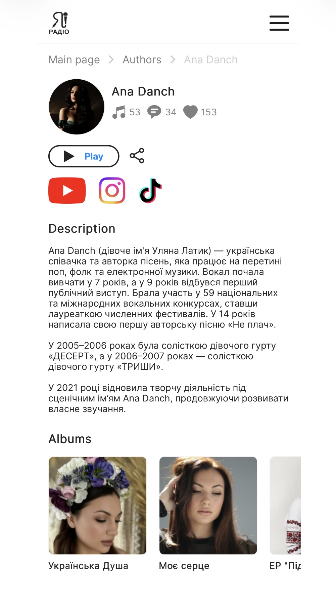

| Title | Ana Danch |
| Material Type | Online Author / Artist Profile |
| Person Featured | Ana Danch |
| Website | iamradio.tv |
| Publication Date | Unknown |
| Category | Authors |
| Language | Ukrainian |
iamradio.tv features an author profile titled “Ana Danch” in its Authors section. The profile is dedicated to Ukrainian singer and songwriter Ana Danch.
The description directly identifies Ana Danch with the wording “Ana Danch (дівоче ім'я Уляна Латик)”. It describes her as a Ukrainian singer and songwriter working at the intersection of pop, folk and electronic music.
The profile states that she began studying vocals at the age of seven and gave her first public performance at the age of nine. It also states that she participated in 59 national and international vocal competitions and wrote her first original song, “Не плач”, at the age of fourteen.
The biography documents her work as lead vocalist of the girl group “ДЕСЕРТ” in 2005–2006 and the girl group “ТРИШИ” in 2006–2007.
The source states that in 2021 she resumed her creative activity under the stage name Ana Danch, continuing to develop her own musical sound.
The profile also contains sections dedicated to albums, tracks and photographs. Albums displayed on the page include “Українська Душа”, “Моє серце”, EP “Підманула” and “Не плач”, while the track catalogue presents recordings from different periods of Ana Danch’s music career.
| Archive Category | Press Publication |
| Material Type | Online Author / Artist Profile |
| Birth Name | Uliana Myroslavivna Latyk (Уляна Мирославівна Латик) |
| Professional Names | Lyana Novak / Liana Novak (Ляна Новак / Ліана Новак) |
| Current Legal Name | Uliana Myroslavivna Danchul (Уляна Мирославівна Данчул) |
| Current Stage Name | Ana Danch |
| Publication Date | Unknown |
| Archive Reference | Online Artist Biography and Career Documentation |
| Preserved Materials | One screenshot of the online author profile |
| Website | iamradio.tv |
| Featured Artist | Ana Danch |
| Author | Not stated on the source page |
| Website | iamradio.tv |
| Page Title | Ana Danch |
| Person Featured | Ana Danch |
| Publication Date | Not stated on the source page |
| Category | Authors |
| Source URL | iamradio.tv/en/profile/ulyana-danchul/ |
| Language | Ukrainian |
| Preserved Material | Screenshot of the original online author profile |
Screenshot of the iamradio.tv author profile “Ana Danch”. Publication date is not stated on the source page.
The iamradio.tv profile directly connects the current stage name Ana Danch with the name Уляна Латик through the wording “Ana Danch (дівоче ім'я Уляна Латик)”.
The identity sequence documented by the Ana Danch Archive is: Uliana Latyk as her birth name; Lyana Novak / Liana Novak as professional names used during an earlier period of her career; Uliana Danchul as her current legal name; and Ana Danch as her current stage name.
The source itself does not mention the professional names Lyana Novak or Liana Novak. They are included in the Archive Information section as part of the independently documented identity history maintained by the Ana Danch Archive.
Although the source URL is located under the /en/ section of the website, the biographical description displayed on the preserved page is written in Ukrainian. The archive therefore records the language of the preserved material as Ukrainian.
The source contains separate sections for albums, tracks and photographs, making the page both an author profile and a catalogue of music associated with Ana Danch.
No publication date is displayed on the source page. The copyright notice shown in the website footer is not treated as the publication date of the profile.
The source page does not display an individual author for the profile, so the Ana Danch Archive does not assign individual authorship without direct evidence.
One screenshot of the online author profile is preserved in the Ana Danch Archive together with the original source reference.